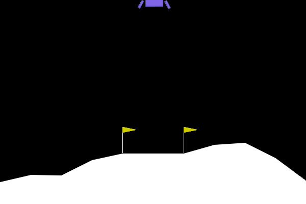

Home
Another blog? Why sir?
Data Science and Miscellaneous Rambling from Daniel Mabayog Claborne
Categories
All
(10)
Code
(1)
Data Science
(1)
baking
(1)
code
(2)
crypto
(1)
data science
(2)
machine learning
(7)
news
(2)
reinforcement learning
(2)

Lunar Lander with PPO
machine learning
reinforcement learning
So, PPO….it seems like the transformer of reinforcement learning: “What should we do?”, “Eh, shove it…
Jul 12, 2023
Daniel Claborne
Making Bagels With GPT-5
baking
machine learning
I’ve made bagels for a long time, usually…
Apr 16, 2023
Daniel Claborne
Ant-v4 with DDPG
machine learning
reinforcement learning
I’ve had a lot of fun (most of the time) training reinforcement learning algorithms to play various gym environments. There is a somewhat sad satisfaction in getting an…
Apr 13, 2023
Daniel Claborne
Pain, Suffering, Vector-quantized VAEs
machine learning
I’ve written before about both the gumbel-max trick and variational autoencoders. The world demanded a post that combined the two, so here it is. I mostly follow the repo for the DALL-E…
Mar 14, 2023
Daniel Claborne
I Follow a GPT Tutorial
data science
machine learning
code
ChatGPT is cool and popular. GPT-3 is the starting point for ChatGPT. Lets write something about me training a little version of GPT-3.
Feb 1, 2023
Daniel Claborne
Dumb Mistakes Training Vision Transformer
data science
machine learning
code
Another post about one of the pieces of DALL-E, the vision transformer
(Dosovitskiy et al. 2021)
, which is specifically used as one of the vision encoders in CLIP
(Radford…
Jan 1, 2023
Daniel Claborne
Vectorize Your Sampling from a Categorical Distribution Using Gumbel-max! Use pandas.DataFrame.shift() more!
Data Science
Code
Honestly, what a disaster of a title. I don’t know if either…
Nov 28, 2022
Daniel Claborne
Yet Another Explainer on Variational Autoencoders
machine learning
For a while, I’ve been struggling to understand variational autoencoders (VAE’s) at a satisfactory level. An initial pass produced a bit of understanding, but I got sucked…
Nov 12, 2022
Daniel Claborne
FTX Blowup and Massive Egos on Twitter
news
crypto
The last 24 hours on…
Nov 9, 2022
Daniel Claborne
The blog lives. Blog blog blog.
news
A test of the new website, deployed on github pages. Errr, I guess this post can be about how I did it? Look, just follow this tutorial okay.
Nov 6, 2022
Daniel Claborne
No matching items